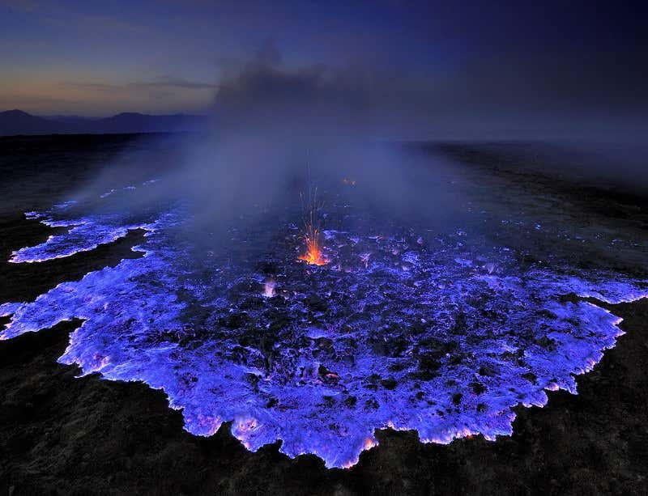

SIMIEN MOUNTAINS
The Semien Mountains are a mountain range in northern Ethiopia.
They are part of the Ethiopian Highlands and are known for their
stunning scenery, dramatic cliffs, deep valleys, and unique wildlife.
The highest peak in the Semien Mountains is Ras Dashen, which stands
at an elevation of 4,550 meters (14,928 feet) and is the highest point
in Ethiopia.
The Semien Mountains National Park is a UNESCO World Heritage Site and
is home to a variety of endemic species, including the Gelada baboon,
Walia ibex, and Ethiopian wolf. The park offers excellent trekking
opportunities, with trails that lead through breathtaking landscapes
and offer panoramic views of the surrounding mountains.
Visitors to the Semien Mountains can explore the rugged terrain,
spot wildlife, and experience the rich culture of the local communities.
The region is a popular destination for hikers, nature lovers, and adventure
seekers looking to immerse themselves in Ethiopia's natural beauty.
Round Trip: 100$
BALE MOUNTAINS
Bale National Park is a national park located in southeastern Ethiopia.
It is known for its diverse wildlife, including endemic species such as
the Ethiopian wolf and the mountain nyala. The park is also home to a variety
of habitats, ranging from high-altitude moorlands to tropical forests.
Bale National Park offers opportunities for hiking, birdwatching, and
wildlife viewing, making it a popular destination for nature lovers and
outdoor enthusiasts. The park is also recognized for its conservation efforts
and is considered one of the best places in Ethiopia to see unique and
endangered species in their natural habitat.
Round Trip: 100$
DANAKIL

The Danakil Depression is a geological depression in northeastern Ethiopia,
southern Eritrea, and northwestern Djibouti. It is known for being one of
the hottest and most inhospitable places on Earth, with temperatures often
exceeding 50 degrees Celsius (122 degrees Fahrenheit). The region is
characterized by active volcanoes, geysers, salt flats, and colorful mineral
deposits, creating a unique and otherworldly landscape.
The Danakil Depression is also home to the Danakil Desert,
which is one of the lowest and hottest places on the planet.
Despite its extreme conditions, the area is inhabited by the Afar people,
who have adapted to the harsh environment and rely on salt mining and camel
herding for their livelihood.
Visitors to the Danakil Depression can experience its surreal landscapes,
including the bubbling lava lakes of the Erta Ale volcano and the vibrant
salt flats of Lake Assal. It is a popular destination for adventure travelers
and geology enthusiasts looking to explore one of the most extreme environments
on Earth.
Round Trip: 100$
SOF-OMER CAVE

The Sof Omar Cave is one of the largest and most spectacular cave
systems in Africa, located in the Bale Mountains of Ethiopia.
The cave is known for its vast network of underground passages,
chambers, and tunnels, some of which are large enough to walk through
comfortably.
The cave is formed by the Web River, which flows through it and has carved
out intricate rock formations over millions of years. The cave is also home
to a colony of Egyptian fruit bats and is considered a sacred site by the
local Oromo people.
Visitors can explore the cave on guided tours, marveling at its natural beauty
and unique geological features. The Sof Omar Cave is a popular destination for
adventure seekers, nature enthusiasts, and those interested in Ethiopia's rich
cultural and natural heritage.
Round Trip: 100$